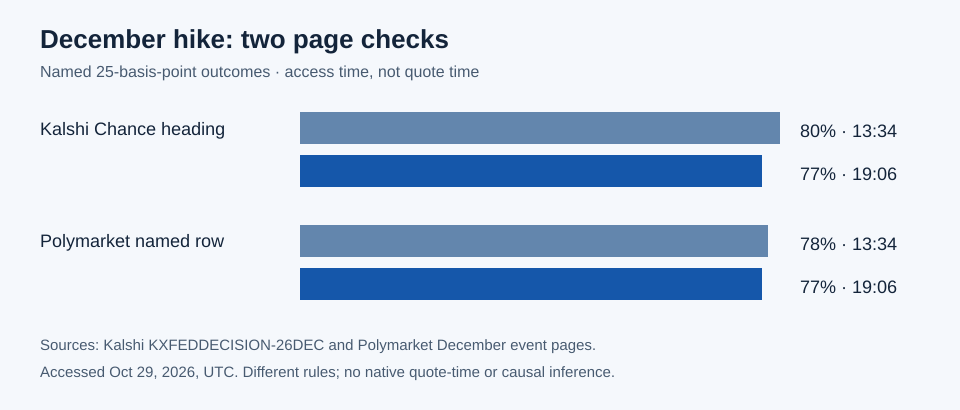

December hike rows show 77% on both venues
The Fed held at 3.75%–4.00% on October 28. The next scheduled decision is December 9, 2026.
Kalshi · December
77% Hike 25bps; 23% Fed maintains rate; 3% Hike >25bps.
KXFEDDECISION-26DEC Chance headings, accessed about 19:06 UTC October 29. Hike was 80% at the 13:34 UTC page check.
Polymarket · December
77% 25 bps increase; 22% No change; 2% 50+ bps increase.
Named event rows, accessed about 19:06 UTC October 29. Hike was 78% at the 13:34 UTC page check.
CME FedWatch
Live December grid and quote time unavailable in the accessible page.
Futures-implied method, distinct from event contracts.
What changed: The named hike displays fell three and one percentage points between the two page checks. These are not venue quote times. GDP and PCE releases preceded both checks today; these observations do not establish why the displays changed.

Next official data: September job openings on November 3 at 15:00 UTC, then October employment on November 6 and CPI on November 10 at 13:30 UTC. Read the dated source note.